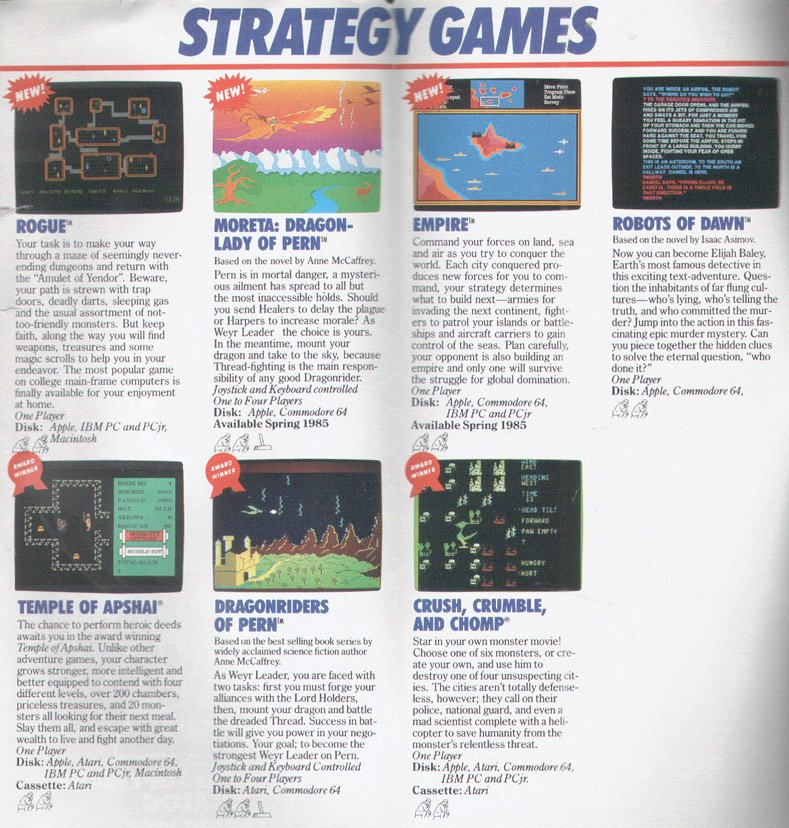
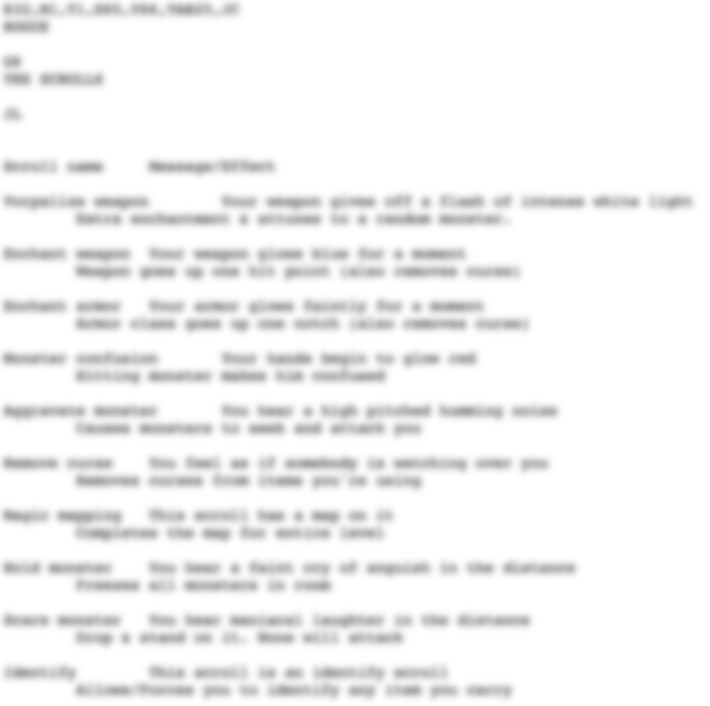
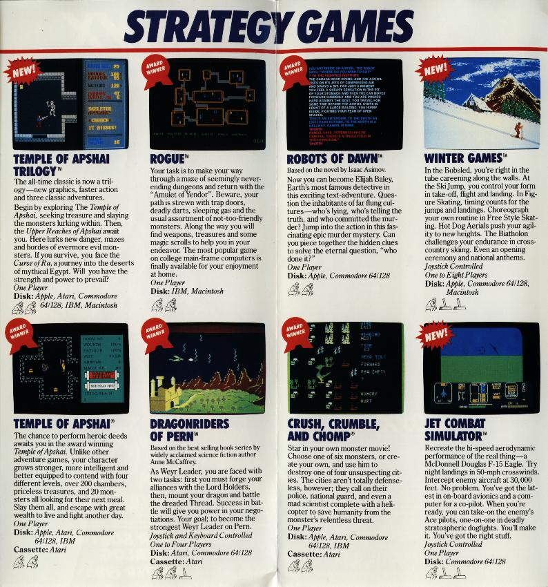
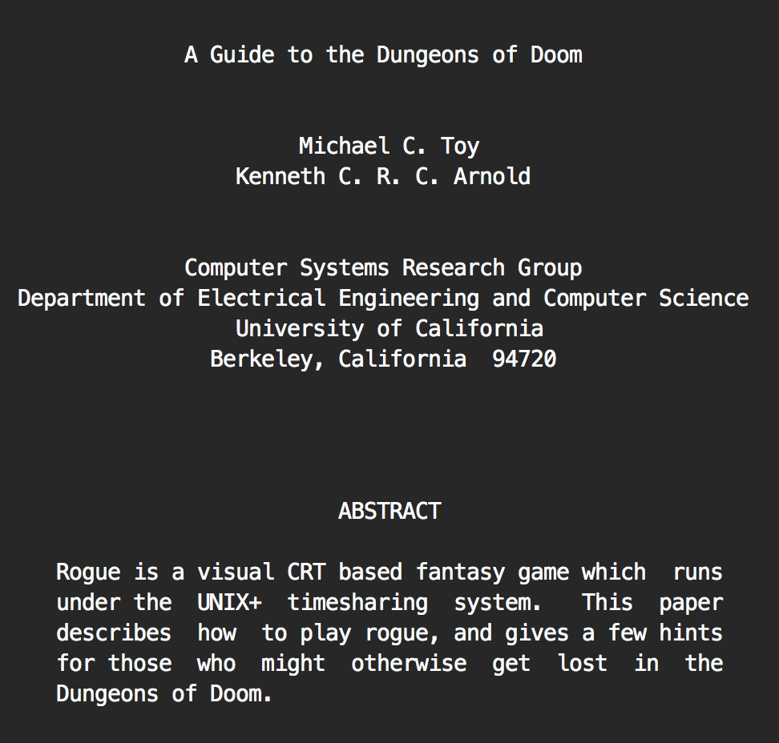

The roguelike archive
This page collects old Rogue versions and other ancient versions of Roguelike games. The page is divided into the following sections:
Original and official versions of Rogue Rogue 3.6.x Rogue 5.2.1 Advanced Rogue Rogue Clone Ultra Rogue XRogue Super Rogue nanRogue Linux Rogue Rog-O-Matic Miscellaneous rogue versions Miscellaneous rogue content
Rogue
Rogue 1.0 by Epyx (TRS-80 CoCo3) - roguecoco3.zip
Rogue 1.0 by Jon Lane (DOS) - rogue1_0.zip (Mr. Mctesq was here)
Rogue 1.0 , SN:1148 by Jon Lane (DOS) - ai_rogue_1.0.arj (Mr. Mctesq was here, original filename rogue.arj)
These exes were probably cracked by different people at different times. The exes differ 13 bytes in size.
Rogue 1.0 , SN:0 by Jon Lane (DOS) - ai_rogue_1.0.zip (Mr. Mctesq was here, original filename: rogue.zip)
This looks like an uncracked copy of v1.0. The exe differs from the two 1.0 versions above.
Rogue 1.1 by Jon Lane (DOS) - rogue1_1.zip (Mr. Mctesq was here)
Rogue 1.1 by Jon Lane (DOS) - ai_rogue_1.1.zip (SN:1349, Mr. Mctesq was here)
These are two different cracked 1.1 versions that differ 252 bytes in size.
Rogue 1.1 (Source) - rog11src.zip
Rogue ".1" Beta Test by Jon Lane (DOS) - ai_rogue_.1_beta.zip (Mr. Mctesq was here version, original filename: rogue.zip)
Rogue ".1" Beta Test by Jon Lane (DOS) - rogueEasy.zip (Faris was here, easy version)
Rogue ".1" Beta Test by Jon Lane (DOS) - rogueHard.zip (Faris was here, hard version)
According to the contributor of these files: "They are exactly the same game, but they appear to have been compiled with different difficulty settings, or one (or even both) is hacked. I *think* that the version in the "easy" directory is the hacked version, but I'm not sure."
Rogue 1.45 by Epyx (DOS) - rogue1_4.zip or rogueepyx.zip (Boudewijn was here)
According to Boudewijn Waijers this was never a modified and recompiled version but merely a quick hack with a binary editor.
Rogue 1.48 by Epyx (Amiga) - amigarogue.zip
Rogue 1.48 by Epyx (DOS) - rogue-1.48.zip
Rogue 1.48 by Epyx (Source) - EpyxRogueDOS148Source.zip
Rogue 1.49 by Epyx (DOS) - EpyxRogueDOS149.zip
Rogue ?.? by Epyx (Mac) (from mac.the-underdogs.org) - rogue.SIT
Rogue ?.? (Mac) - mac-rogue-30.hqx
Rogue by Epyx (Atari ST) - rogueat.zip
Rogue by Mastertronic (Sinclair Spectrum) - roguesinclair.zip
Rogue by Mastertronic (Amstrad CPC) - roguecpc.zip
Rogue by Mastertronic (C64) - rogue64.zip
Rogue by David Goodenough (CP/M) - rogue17cpm.zip
Rogue II by Epyx (Atari ST) - rogue2at.zip
Rogue 3.6.x
According to the roguelike restoration project Rogue 3.6 was released on or about 06/16/1981 and was the first version of Rogue ever widely released.
Rogue 3.6.1 (DOS) - rrogue36.zip
Rogue 3.6.2 (AIX) - rogue3.6.2-aix.tar.gz
Rogue 3.6.2 (Cygwin) - rogue3.6.2-cygwin.tar.gz
Rogue 3.6.2 (DJGPP) - rogue3.6.2-djgpp.zip
Rogue 3.6.2 (SFU/Interix) - rogue3.6.2-interix.tar.gz
Rogue 3.6.2 (Linux) - rogue3.6.2-linux.tar.gz
Rogue 3.6 (Source) - from_bsd_usenix87_rogue3.6.zip
Rogue 3.6 (Source) - rog36.tar or rog3.6.tar.Z
Rogue 3.6.2 (Source) - rogue3.6.2-src.tar.gz
Rogue 5.2.1
According to the roguelike restoration project Rogue 5.2 was released on or about 04/11/1982.
Rogue 5.2.1 (AIX) - rogue5.2.1-aix.tar.gz
Rogue 5.2.1 (Cygwin) - rogue5.2.1-cygwin.tar.gz
Rogue 5.2.1 (DJGPP) - rogue5.2.1-djgpp.zip
Rogue 5.2.1 (SFU/Interix) - rogue5.2.1-interix.tar.gz
Rogue 5.2.1 (Linux) - rogue5.2.1-linux.tar.gz
Rogue 5.2 (Source) - from_bsd_pdp11_file8_rogue5.2.zip
Rogue 5.2.1 (Source) - rogue5.2-1-src.tar.gz
Rogue 5.2 (Source), slightly modified by people at New Mexico Tech - from_bsd_usenix87_rogue5.3.zip
Rogue Clone 5.3 (Source) - rogue-libc5-ncurses.zip
Advanced Rogue
According to the roguelike restoration project Advanced Rogue 5.8 was developed by a group of employees at AT&T Bell Labs between 1984 and 1985. Michael Morgan and Ken Dalka appear to be among the semi-anonymous authors. AT&T distributed Advanced Rogue through the AT&T Toolchest for a time. Advanced Rogue 5.8 is based on the Rogue 3.6 source code with some additions from Super-Rogue. Advanced Rogue 5.8 was released on or about 01/03/1985.
Advanced Rogue 5.8.1 (DJGPP) - arogue5.8-1-djgpp.zip
Advanced Rogue 5.8.1 (Linux) - arogue5.8-1-linux.tar.gz
Advanced Rogue 5.8.1 (Win32) - arogue5.8-1-win32.zip
Advanced Rogue 5.8.1 (Source) - arogue5.8-1-src.tar.gz
Rogue Clone ver I, II, III, IV
These are the original versions by Tim Stoehr and others for UNIX and similar systems, which were ported to various systems and used as the basis for modern versions.
Rogue Clone ver II (DOS) - cbip_rogue.arc (original filename rogue.arc)
Ported to DOS by Steve VanDevender and posted to comp.binaries.ibm.pc as "rogue.arc" on 1988-07-01
Rogue Clone ver II (DOS) - cbip_old_rogue.arc
This is an earlier revision of the above "rogue.arc", posted sometime between March 1988 and June 1988.
Rogue Clone ver II (DOS) - dosrogue.zip
On 1998-08-12, Oliver Richman announced a DOS port of rogue on rgrr, and said to go to <http://www.pathcom.com/~simex/opr/index.html> for sources. Now, there wasn't actually any sources, just a zipfile, <http://www.pathcom.com/~simex/opr/dosrogue.zip>, with an .exe and a README. Then on 1998-08-18 he put up a new version with a TERMCAP file, and that is why the README says "RELEASE 2".
Rogue Clone ver II (Amiga) - rogue11.zip
Rogue Clone ver II (Source, Amiga) - rogue11Source.lha
Rogue Clone ver II (PSP) - Rogue_v1_01.zip
Rogue Clone ver II (Source, PSP) - Rogue_v1_01-src.zip
Rogue Clone ver III (Mac) - roguemac.zip
Rogue Clone III (Source) - from_bsd_4_3_rogue5.3.zip
Rogue Clone III (Source), minor changes to above - from_bsd_4_4_rogue5.3.zip
UltraRogue
According to the roguelike restoration project UltraRogue was developed by Herb Chong between 1985 and 1986. Mostly distributed in binary form and later an unoffical archive was commonly available (v1.0.3 8/13/1986). UltraRogue is based on the Rogue 3.6 and an early version of Advanced Rogue source code.
Ultra Rogue (NextStep) - urognext.zip
Ultra Rogue 1.03 (DOS) - ur20.zip
Ultra Rogue 1.03 (Mac) - uroguemac.zip
Ultra Rogue 1.03 (Source) - uroguesrc.zip
Ultra Rogue 1.0.5a (Source) - urogue.zip
Ultra Rogue 1.0.7 (AIX) - urogue1.0.7-aix.tar.gz
Ultra Rogue 1.0.7 (Cygwin) - urogue1.0.7-cygwin.tar.gz
Ultra Rogue 1.0.7 (DJGPP) - urogue1.0.7-djgpp.zip
Ultra Rogue 1.0.7 (SFU/Interix) - urogue1.0.7-interix.tar.gz
Ultra Rogue 1.0.7 (Linux) - urogue1.0.7-linux.tar.gz
Ultra Rogue 1.0.7 (Source) - urogue1.0.7-src.tar.gz
XRogue
According to the roguelike restoration project XRogue was developed by Robert Pietkivitch in 1991 for the AT&T UNIX PC. XRogue 8.0 was completed 6/8/1991. XRogue is based on Advanced Rogue 7.8 which in turn is based on Rogue 3.6.
XRogue 8.0.2 (AIX) - xrogue8.0.2-aix.tar.gz
XRogue 8.0.2 (Cygwin) - xrogue8.0.2-cygwin.tar.gz
XRogue 8.0.2 (DJGPP) - xrogue8.0.2-djgpp.zip
XRogue 8.0.2 (SFU/Interix) - xrogue8.0.2-interix.tar.gz
XRogue 8.0.2 (Linux) - xrogue8.0.2-linux.tar.gz
XRogue 8.0.2 (Mac OSX) - xrogue8.0.2-src-macosxbinary.tar.gz (also sourcecode)
XRogue 8.0.2 (Source) - xrogue.zip
XRogue 8.0.2 (Source) - xrogue8.0.2-src.tar.gz
Super Rogue
According to the roguelike restoration project Super-Rogue was developed by a group of employees at AT&T Bell Labs between 1982 and 1983 with the public face of the group being Robert D. Kindelberger. Released internally and to friends were versions 6.5, 7.2, 8.0, 8.3, and culminating in 9.0 (circa 5/7/83 through 7/17/84). Super-Rogue 9.0 is based on the Rogue 3.6 source code.
Super Rogue 9.0.1 (AIX) - srogue9.0-1-aix.tar.gz
Super Rogue 9.0.1 (Cygwin) - srogue9.0-1-cygwin.tar.gz
Super Rogue 9.0.1 (DJGPP) - srogue9.0-1-djgpp.zip
Super Rogue 9.0.1 (SFU/Interix) - srogue9.0-1-interix.tar.gz
Super Rogue 9.0.1 (Linux) - srogue9.0-1-linux.tar.gz
Super Rogue 9.0.1 (Source) - srogue9.0-1-src.tar.gz
nanRogue
According to the author nanRogue is based on rogue 5.3-clone. www.prankster.com/nanrogue
nanRogue 0.9 by Geoff Dunbar (ARM, PocketPC) - nanrogue_0_9_arm.zip
nanRogue 0.9 by Geoff Dunbar (SH3) - nanrogue_0_9_sh3.zip
nanRogue 0.9 by Geoff Dunbar (MIPS) - nanrogue_0_9_mips.zip
nanRogue 0.9 by Geoff Dunbar (Source) - nanrogue_0_9_src.zip
Linux rogue
LinuxRogue is based on the original Rogue 5.3 Clone P12 . The original work for this was by Tim Stoehr on UNIX. It was ported to Linux by Steve Wilson. Alan Cox maintained LinuxRogue for prehistoric Linux kernels.
LinuxRogue 0.2 by Ashwin N (Source) - linuxrogue-0.2.tar.bz2
LinuxRogue 0.2.1 by Ashwin N (Source) - linuxrogue-0.2.1.tar.bz2
LinuxRogue 0.2.2 by Ashwin N (Source) - linuxrogue-0.2.2.tar.bz2
LinuxRogue 0.3 by Ashwin N (Source) - linuxrogue-0.3.tar.bz2
LinuxRogue 0.3.1 by Ashwin N (Source) - linuxrogue-0.3.1.tar.bz2
LinuxRogue 0.3.2 by Ashwin N (Source) - linuxrogue-0.3.2.tar.bz2
Linux Rogue by Alan Cox based on Rogue 5.3-clone by Tim Stoehr (Source) - lrogue-5.3.zip
Rog-O-Matic
Rog-O-Matic is a bot developed in 1981 to play and win Rogue, by four graduate students in the Computer Science Department at Carnegie-Mellon University in Pittsburgh: Andrew Appel, Leonard Hamey, Guy Jacobson and Michael Loren Mauldin.
Rog-O-Matic - from_bsd_usenix87_RogOMatic.zip
Rog-O-Matic XIV - rgm14.tar.Z
Rog-O-Matic XIV - rogomatic.tar.Z (altered but with same version number)
Rog-O-Matic XIV - rogomatic.tar.Z (altered but with same version number)
Rog-O-Matic scientific paper 1983 - rogomatic.html
Rog-O-Matic scientific paper 1984 - Rog-O-Matic - a belligerent expert system.pdf
Miscellaneous rogue versions
ECL Rogue (from https://github.com/PDP-10/Rogue) for TOPS-20 (Source) - ECLRogue-PDP1.0-master.zip
PocketRogue 0.92 by Takebayashi Tomoaki (PalmOS) - rogue_en_092.zip
TiRogue 0.1 by Christopher Waudby (TI-89) - tirogue.zip
Rogue Darwin 1.0.0 (Source) - RogueDarwin.tar.gz
Command-line (Terminal) version of Rogue for Mac OSX using its default curses library
JavaRogue (from Hexatron.com) - rouge.jar (sic!)
JavaRogue (from Hexatron.com), (Source) - jrogue.zip
Old JavaRogue (from Hexatron.com) - oldrouge.jar (sic!)
HexRogue (from Hexatron.com) - hexrogue.jar
WinRogue 3.0 (from Hexatron.com) - win_ROGUE.ZIP
WinRogue 3.0 seems to be based on Rogue Clone version III by Tim Stoehr
Rogue for Windows v0.1 by Geoff Dunbar (Win32) - winrogue_0_1.zip
According to the author WinRogue is based on rogue 5.3-clone. www.prankster.com/winrogue/
zRogue by Gevan Dutton (Z-Machine) - rogue.z5
zRogue is based on the Rogue 5.3-clone
Krogue 0.9.5 (Linux, KDE) - krogue-0_9_5-1_i386.zip
KRogue 0.9.5 (Source) - krogue-0_9_5.zip
KRogue is a version of Rogue that works under the KDE desktop enviroment.
iRogue 0.30 (PalmOS) - irogue.zip
iRogue 0.30 (Source) - irogue-src.zip
iRogue is derived from two versions of rogue (rogue5.3-clone and urogue). roguelike-palm.sourceforge.net/iRogue/
Rogue 3.0 by Marco Pontil (Mac) - mac-rogue-30.zip
CronosRogue by Cronos (Win32) - rogue.zip
CronosRogue is based on LinuxRogue 0.1 (Rogue 5.3 Clone Pl2) but with several updates/patches. See release notes inside archive.
Advanced SuperTurbo Rogue Plus (Win32+Source) - Rogue545_plus-v05.zip (from https://sourceforge.net/projects/advanced-superturbo-rogue-plus/)
Epyx Rogue manual
{kind=link}
Rogue in Strategy Game listing
Rogue spoilers (ROGEHINT.TXT)
Rogue spoilers (spoilers.zip)
Epyx Rogue manual
{kind=link}
Rogue in Strategy Game listing
Wheaton College Rogue Information Guide
A Guide to the Dungeons of Doom, by Michael C. Toy and Kenneth C. R. C. Arnold
Epyx Rogue manual

Epyx Rogue cover
Some information on an MsDos version of Rogue
The Rogue's Vade-Mecum by Col. Sicherman